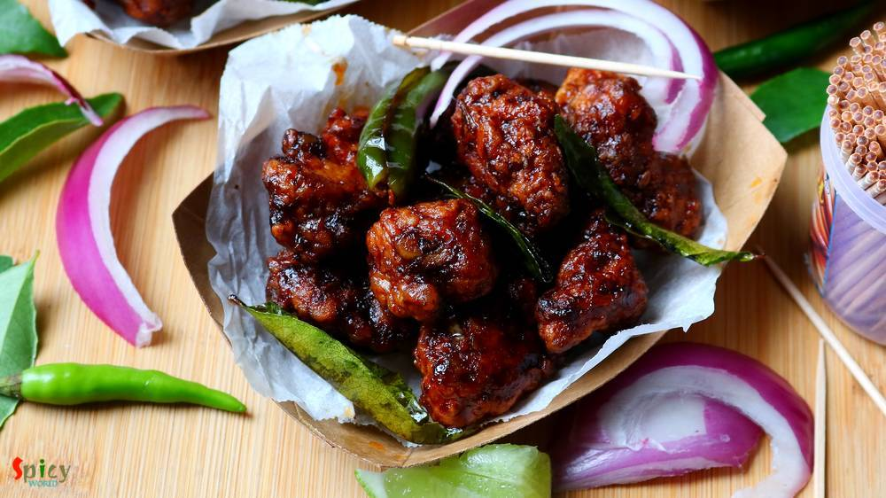
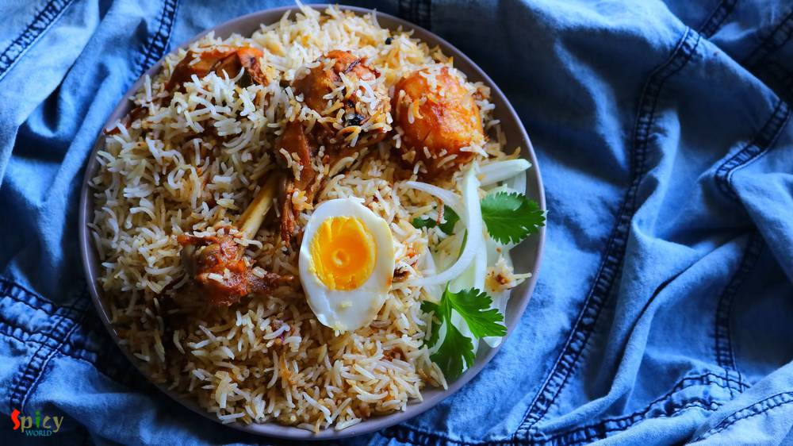
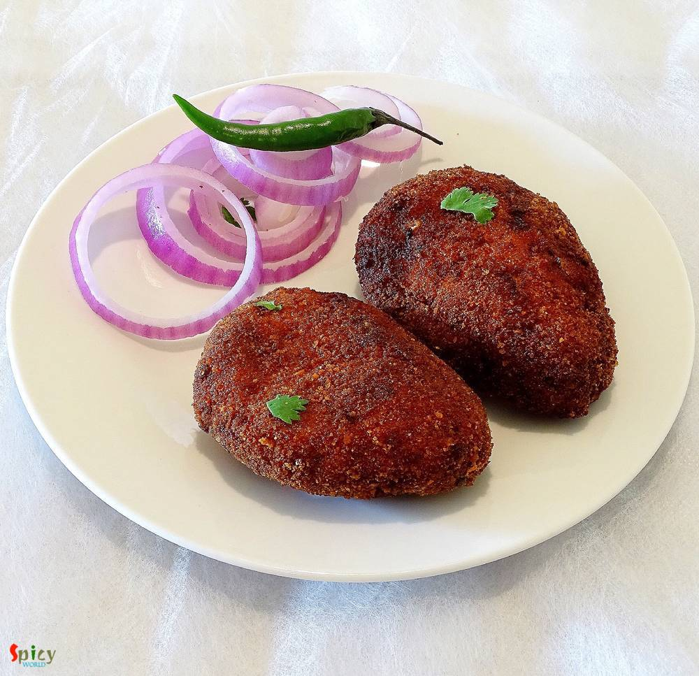
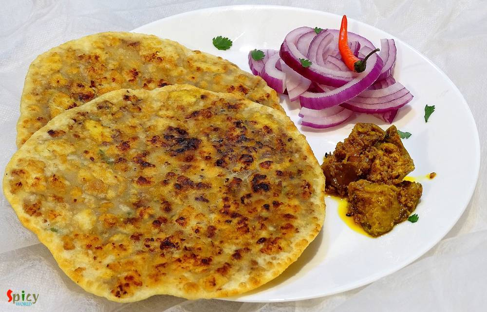
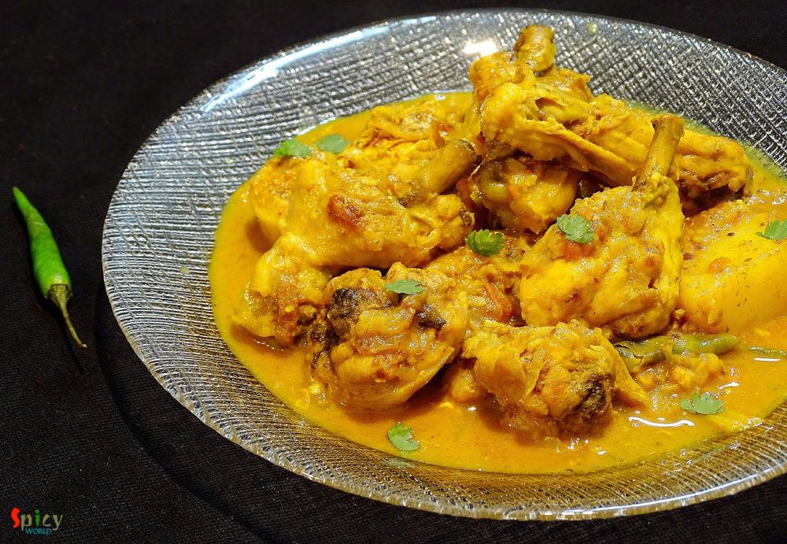
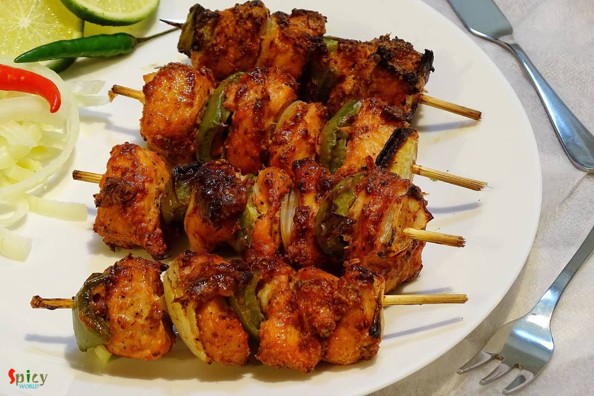
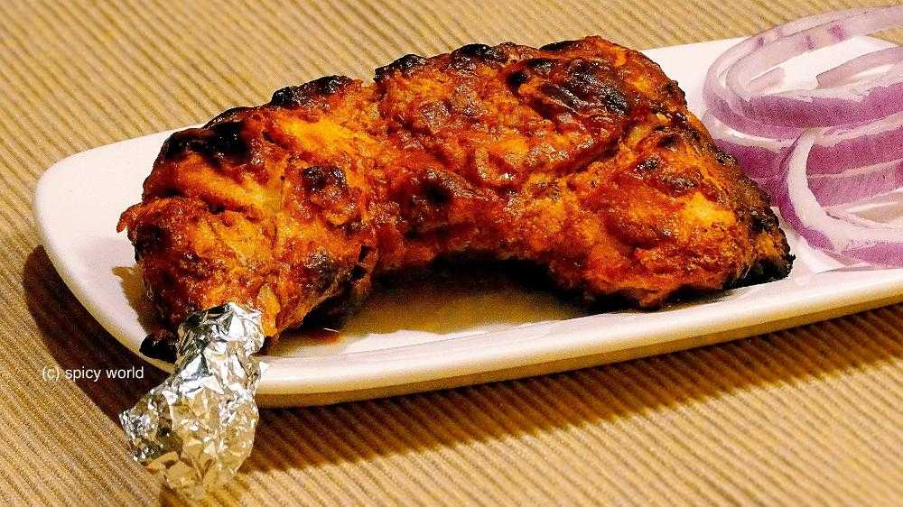
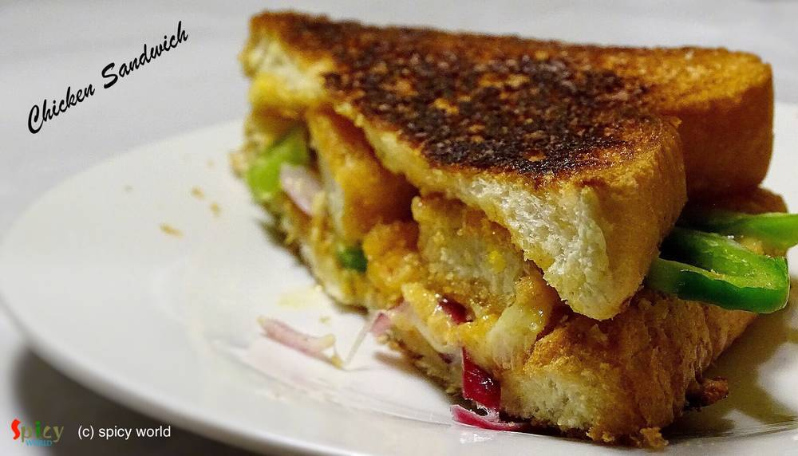
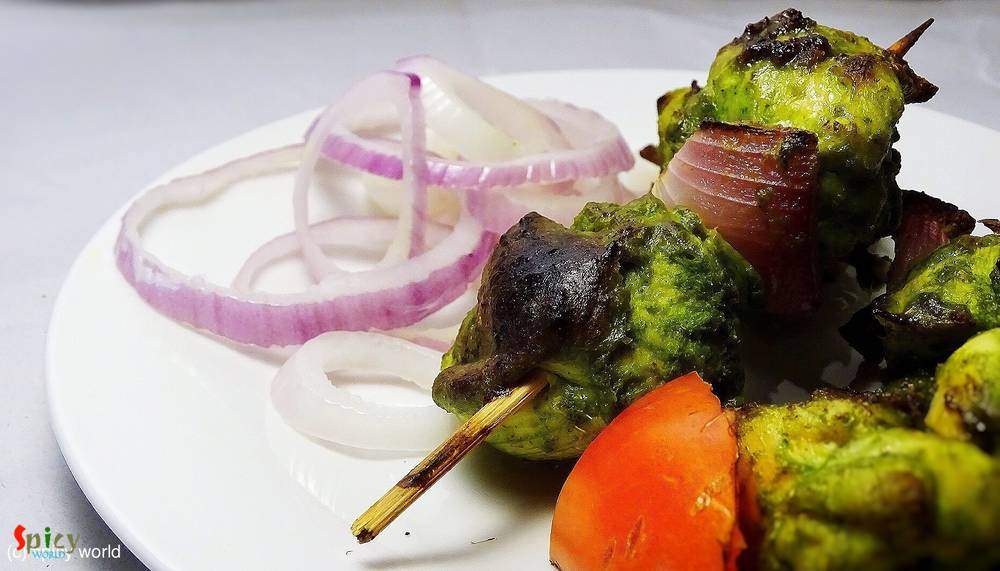
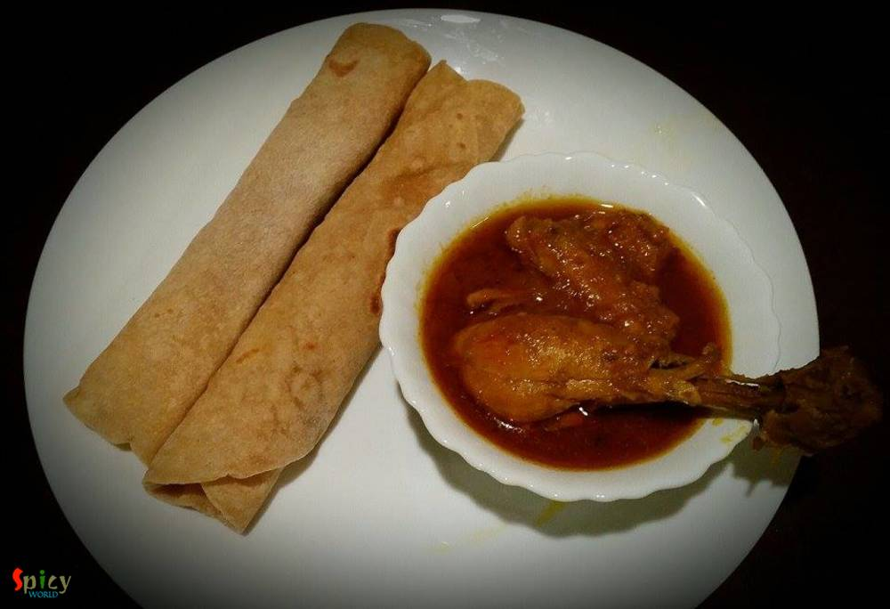

Simple and Easy Recipes

Posts on 'chicken'

Nonveg Recipe
Apr 5, 2019
Who doesn't give order Chicken wings from starter menu in restaurants?? I am one crazy wings lover. There are so many yummy recipes of Chicken wings in the internet. They all look really good. Here is my take on Bhuna (slow cooked, using water as less as possible) Chicken wings which is basically Indian style spicy wings. You can make this recipe with drumsticks also. With some green chutney and o ...


Nonveg Recipe
Mar 29, 2019
Afghani Chicken Curry is a very flavorful main course recipe in which marinated chicken will be first shallow fried until dark brown then cooked in a thick onion based gravy. I have learnt the recipe from my friend Ankita. The Afghani chicken tastes best with plain chapati or naan or light pulao. Try this recipe in your kitchen and let me know how it turned out for you.

Nonveg Recipe
Sep 24, 2015
Yesterday morning during surfing net I saw an eyecatching picture of Chicken Dak Bunglow curry. It made me doing immediate preparation for dinner.Trust me, after dinner there was literally nothing in our plate except bones:-) It became so damn tasty ! I once ate the mutton version of this curry. That was also finger licking delicious, will upload that soon. Do give this recipe a try and I am sure ...
")
Nonveg Recipe
Feb 23, 2019
I guess you all, who follow my blog, already know that we have a 'thing' for Biriyani. Be it with chicken / mutton / prawn we are always ready to enjoy. I've already posted Kolkata style biriyani recipe which is much easier than Hyderabadi style as you need to have full confidence on timing and proportions. In Kolkata we make the chicken with gravy first and then give 'dum' with cooked rice, where ...

Nonveg Recipe
Feb 7, 2019
One of the popular Tibetian delicacy is Momo. They are very similar to dumplings and now a well known street food across India. You will get so many varieties from modern MOMO shops like 'MOMO I AM', 'WOW MOMO' etc. Steamed chicken momos are healthy and tastes more delicious with hot & spicy red chutney. Thin wrapper made out of flour will be filled with tasty ground chicken filling, and then they ...

Nonveg Recipe
Jan 28, 2019
Chicken Hot and Sour Soup is one of the popular soup variety from Chinese cuisine. In this silky, spicy, sour broth you can add almost everything like chicken, egg, tofu and many kinds of vegetable. Hot and sour soup tastes best (especially) during winter or monsoon and it can also uplift your taste buds. Try this easy recipe in your kitchen and let me know how it turned out for you.

Nonveg Recipe
Jan 11, 2019
Chicken Lollipop is one of the most frequently ordered starter item in Indian restaurants. Main trick here is to give chicken wings, lollipop shape. You can serve them after deep frying but trust me tossing the fried Chicken lollipops in spicy brown sauce will enhance the taste to another level. Do give this recipe a try and let me know how it turned out for you.

Nonveg Recipe
Jan 4, 2019
Dahi chicken is a very simple yet delicious chicken curry which goes best with roti or plain chapati. Dahi or Doi means plain full fat yogurt. This dahi wala murgh has a delicious thick white colored yogurt and onion based gravy. Well, I prefer white colored doi chicken, if you like colorful then add some turmeric powder and red chili powder, rest of the recipe will remain same. You will get very ...

Nonveg Recipe
Mar 7, 2019
A super spicy and fiery indo-chinese starter is 'Chicken 65'. In southern part of India, few restaurants first started selling this Chicken 65 as a quick snack and now, people from all around the world knows about Chicken 65. In USA, we get delicious Chicken 65 from Indian restaurants, it is one of our favorite appetizer and that is why I made my mind to make this dish in my kitchen. You can make ...

Nonveg Recipe
Dec 6, 2018
Chicken Changezi has a rich, chatpata (spicy and tangy) and very delicious gravy which goes best with plain flatbread or naan. Changezi Chicken is a popular dish in Delhi. Almost every non veg restaurants and dhabas sell this dish. In this recipe lightly fried chicken will be cooked in a brown onion and nut based gravy and to make it chatpata, we will add chaat masala, lemon juice, green chilies a ...
")
Nonveg Recipe
Dec 14, 2018
I am a very fast food loving person. During college life there was hardly any day I skipped fast food. Be it simple 'phuchka' (panipuri) or heaviest roll, I was always in ! Surprisingly after my marriage I have taken a lot of control over my food habit, I have become more conscious now. But that doesn't mean I can't eat fast food once in a week .. hell I can ! ?? When I made these yummy 'egg chi ...

Nonveg Recipe
Nov 22, 2018
Hariyali Chicken Kabab is a very delicious variety of kabab in which boneless chicken will be marinated in yogurt, ginger, garlic, mint-coriander paste and lot of fresh spices along with few other ingredients. You can definitely use chicken legs instead of boneless. I will recommend you to use chicken thighs instead of breast pieces, as thighs will come out much more juicy. Hariyali means green co ...

Nonveg Recipe
Oct 29, 2018
Pudina Chicken has a delicious yogurt and mint based gravy which goes best with plain roti or Indian flatbread. Mint leaves / Pudina patta has it's very own unique taste and flavor, which is why you can only use them in those dishes where it fits properly. Not every chicken curry tastes good with mint but this one is my family favorite. Pudina Chicken is very simple recipe with loads of fresh flav ...
")
Nonveg Recipe
Aug 23, 2018
I am a really big fan of indo-chinese food, whereas 'he' prefers mughlai or authentic bengali food more. Before marriage, I used to find excuses to go to any restaurant and eat 'chilli chicken' with rumali roti. I know what are you guys thinking. But don't know why I love this combo so much. In every street of Kolkata you can find various indo-chinese restaurants. I mentioned Kolkata style because ...

Nonveg Recipe
Sep 21, 2018
Kolkata style Chicken Dum Biriyani is one of the tastiest variety of biriyani recipe, which has awesome flavors and juicy chicken pieces. You can have it as it is or with Chicken Chaap / Korma / Kosha. I also have other Biriyani recipes in my blog. Cooking Biriyani is time consuming, also the more you practice the more you will get better at this. The process is lengthy but with few tricks and tip ...

Nonveg Recipe
Sep 13, 2018
Mughlai chicken curry is a thick, nut based gravy dish from the Mughlai (awadhi) cuisine. The sauce of this Mughlai Chicken curry is very rich so you can serve this with naan, roti or light pulao. In this recipe first marinated chicken will be fried then cooked in onion, tomato gravy with lots of other flavorful ingredients. Last Saturday my family enjoyed it thoroughly, now its time for you to en ...
Nonveg Recipe
Feb 7, 2019
One of the popular Nepalese delicacy is Momo. They are very similar to dumplings. Chicken momos are healthy and tastes more delicious with hot & spicy chutney. Thin wrapper made out of flour will be filled with tasty ground chicken filling, and then they will be steamed to perfection. You can enjoy them as brunch or snacks.

Nonveg Recipe
Jun 29, 2016
Our common friend Subhodip visited our house last weekend for a dinner. He is a real foodie and have a very good knowledge about food and restaurants. So, I wanted to make something new on chicken for him and also for my blog. I have already posted 'mutton dopyaza' recipe, then I thought this time why not with chicken? Confirmed the idea with my hubby and 'chicken dopyaza' got selected for main-co ...

Nonveg Recipe
Jul 5, 2018
In Bengal, one of the common non-veg curry is 'chicken kosha'. I think everybody is familiar with this name. Kosha / Bhuna is a process where you have to cook the meat with spices on medium - low flame in its own juices, if it gets dry then only add water as less as possible. It requires time but with chicken you can make it within an hour. One can make the same curry with mutton, potato, egg etc. ...

Nonveg Recipe
Jun 6, 2018
We all love to eat chicken stew during summer days ... right ? Because it is very healthy and soothing for our body. I gave this recipe a twist with a simple Butter Garlic tempering and the taste turned out so yummy. As I am a garlic loving person, so I didn't use any whole spices like Garam masala here because the garlicky flavor would have been dominated by those strong flavors. Give this super ...

Nonveg Recipe
May 18, 2018
I have someone in my house who often demands to eat 'homemade-restaurant style' dinner in weekend ???. That's why last Sunday I had to make 'butter chicken' along with 'butter naan'. Nowadays 'butter chicken' is famous in all over the world. In Indian restaurants this is the mostly ordered dish. It has a tomato based, rich, velvety gravy and grilled, juicy chicken pieces. The combination was a tot ...
")
Nonveg Recipe
Mar 14, 2019
Chicken Bharta was prepared last weekend in our lunch. The recipe is Punjabi inspired Bengali dish. A very tasty shredded (pulled) chicken preparation which is famous throughout India. It has onion and tomato based gravy with beautiful flavor of kasuri methi and Garam masala. Of course, how can I forget about the Boiled Egg? To make an excellent Chicken Bharta you have to finish it off with boiled ...

Nonveg Recipe
May 24, 2018
I am one true lover of rolls, be it an Egg roll or Chicken roll. I know many of you do also. But fact is it's always better to have home cooked food than consuming street food, here everyone has one common complain about that - taste is not the same yaar ! right ? Being a crazy fast food lover I can guarantee you that this is one top notch recipe of Butter Chicken Roll. I've combined two best idea ...
 / Yogurt Pepper Chicken")
Nonveg Recipe
Apr 24, 2018
"Lajawab" is the only compliment about mom's recipe. My mom make this dish in a very easy and simple way. But it tastes delicious. You will need very few ingredients for this dish. This the best recipe for teenagers because its very easy to make.

Nonveg Recipe
Apr 17, 2018
Fried rice is everybody's favourite .. agree or not ? You can add whatever ingredient you have in your fridge and thats what happened with me. I had few veggies laying around, so thought why not throw everything with some rice. Best part of this idea - added some chicken strips. After around 10 minutes of stir frying a good wholesome Chicken fried rice was waiting for me to make my soul and tummy ...

Nonveg Recipe
Sep 20, 2016
I know it's been two weeks I didn't post anything due to settling down in India, but heyy now I am back with another interesting recipe from 'dhaba' gharana. Every place has their own style of dhaba / road side food joints. Whenever we plan any short trip within Bengal, we try to make the lunch stop at some popular Dhaba. Their 'torka-ruti' and 'chicken curry' with rice are must for us. I like the ...

Nonveg Recipe
Aug 18, 2016
In a rainy evening, a plate of hot, crispy popcorn chicken with a cup of tea / a glass of chilled beer can be seriously addictive! Yes today's blog is about 'popcorn chicken'. From younger to elder everybody loves this dish. This chicken recipe is very much different from 'chicken nuggets' or 'chicken pakora'. After frying them, you will get soft chicken inside and crispy coating (not breadcrumbs) ...

Nonveg Recipe
Aug 4, 2016
Chicken Pakoras require no introduction. Specially when they are coated with a sweet and spicy sauce ... I love to eat them more than I love to eat any Chinese takeouts. It's a very kid friendly recipe and you can always control the heat level according to your little ones tastebuds. These tangy, spicy bites are more than yumm ! If you are having guest and you want to serve them a new starter then ...

Nonveg Recipe
Jul 22, 2016
During monsoon or winter or whenever you are down with cold and flu, this 'chicken stew' is the perfect dish to bring back the taste of your tastebuds. I am sure lots of Bengalis will relate to this dish. The slight heat from black pepper and saltiness of butter is the main attraction of this item. This stew is very healthy and home style as you can add many veggies of your choice. The recipe is s ...

Nonveg Recipe
Apr 20, 2016
'Chop - Cutlet' shops are very much available in Kolkata. You will surely find one or two shop in every street. You know how much I love fried stuff, but this one sits on top of my favourite list. 'Cutlet' means breadcrumb coated fried flat croquette. Generally in India we eat this type of fast food from street shop. After my marriage my mom twice made these chicken cutlets at home. They were scru ...

Nonveg Recipe
Jun 13, 2016
Earlier I have shared the recipe of 'Kolhapuri Egg curry', today I am going to share the same recipe, but with chicken and some changes. One of the main ingredient in Maharashtrian cuisine is 'coconut'. We both are not too much coconut eater but when it comes to make authentic dish, I always try to make the taste as close as possible. As this is a 'Kolhapuri' gravy, you have to incorporate coconut ...

Nonveg Recipe
Jul 12, 2016
In USA, every Indian resturant serves 'chicken tikka masala' and it tastes delicious. I never had it in India, don't know why ? Tikka sized grilled chicken, onion and bell peppers are cooked in a tomato based creamy gravy. After tasting this dish several times in restaurants, last month I thought of making it at home. Few months ago I uploaded the recipe of 'chicken tikka kabab', so I am going to ...

Nonveg Recipe
Jun 6, 2016
Though I ate various types of kabab in India but had no clue about 'chicken shawarma'. I tasted this delicious dish first time in Austin, Texas and now they are available in pretty much all over the world. Shawarma' is a middle eastern kabab preparation which can be made of lamb / chicken / turkey or beef. I had them first time with pilaf and second time with pita bread. My husband and I both fell ...

Nonveg Recipe
May 10, 2016
This chicken curry belongs to the category of 'dhaba food'. The gravy is very popular in Punjab and all over India. You can also make this dish with paneer or vegetables. The white, creamy texture of the gravy and beautiful aroma of fenugreek leaves will take you to heaven. I used boneless chicken for this recipe, feel free to make it with chicken on bone, it will be no issue. You can pair this di ...

Nonveg Recipe
Mar 26, 2016
The maincourse dishes from 'mughlai cuisine' has rich, oily, flavorful gravy and my husband is a fan of their cuisine. One of our common favorite item is 'Chicken Rezala', thick + white + rich gravy with juicy chicken pieces. I like my rezala with thick gravy but many people also like to eat thin rezala gravy. I have already shared 'fish rezala' recipe with you and now it's time for chicken. You c ...

Nonveg Recipe
May 3, 2016
Few months back I saw a recipe of this 'dhaniya murgh kabab' with boneless chicken in facebook. The picture caught my eyes and then I made my mind to give it a try. But I actually got time to make it last weekend as I already had so many recipes in my drafts and to-do list. There were few changes I make with the recipe and we both got very much impressed by it's result. Smokey flavour of any type ...

Nonveg Recipe
Apr 26, 2016
Don't know about you, but I love 'keema' / mince form of meat. I have already posted so many recipes on 'keema' and this time I made paratha with mince chicken. The authentic recipe calls for 'mutton keema' but didn't have it that time, so made it with chicken and the parathas came out perfectly fine. These breads can be enjoyed with pickle, raita or any type of gravy. The recipe is very simple bu ...

Nonveg Recipe
Apr 22, 2016
Are you a garlic loving person ? I am. As chicken is my favourite protien, so I had to combine these two in one dish. 'Lehsuni Murgh' is the perfect dinner choice I made last of last weekend. The dish has very minimum spices with beautiful roasted garlic flavour. This curry can be served with naan, roti or paratha. Recipe is very simple but it tastes heavenly.

Nonveg Recipe
Apr 15, 2016
What can I say about this one? Because again its Kabab!! This malai kabab has very smooth texture and smokey flavour. 'Malai' means cream, usually chicken cubes are marinated with yogurt, cheese, cream and some spices, I also did the same. You will be lost whenever you put that juicy, tendor piece of chicken in your mouth. I am damn sure that these kababs will make your appetite satisfy. Enjoy the ...

Nonveg Recipe
Apr 11, 2016
Chicken curry is almost regular in my kitchen and that's why I always try to do some twists with the masala, otherwise who will eat same chicken curry regularly? Nobody ! This time I made the twist with dry spices. Generally whole garam masala is used in this type of curry but I decided to go for a change and surprisingly I got the perfect taste. 'Bhuna' means koshano / in low flame you have to co ...

Nonveg Recipe
Apr 5, 2016
I can eat chicken curry in any mood, any day. Chicken was almost regular to our home. My father and I are true chicken lover and that's why my mom used make very plain and simple chicken curry on weekdays. Sometime when she was in hurry, she used to throw everything in a pan and came up with this tasty chicken curry. I also heard that villagers often make this kind of curry which needs no recipe, ...

Nonveg Recipe
Apr 2, 2016
It is a well known fact that we both are foodies. We are Bengali, so there is no escape from food and 'adda' (gossip). Every season, every puja and every occasion is incomplete without proper food to us. We love to do grocery shopping everyday in India. No guest can leave our house without atleast a sweet and a glass of water. So, I want to dedicate this post to them who really loves to eat and fi ...

Nonveg Recipe
Mar 23, 2016
Whenever I buy different types of sauces from market, can't think anything but Chinese dishes. With few ingredients you can creat such a splendid item. So, last of last weekend I went ahead and made 'chicken manchurian', the more I can say about it's delicious tangy and spicy taste the less it seems. We enjoyed it with some fried rice but you can also serve this with hakka noodles or simple rumali ...

Nonveg Recipe
Mar 15, 2016
Do you have some boneless chicken, onion and capsicum in your kitchen?? Then why don't you make some 'tikkas'? Chicken Tikka is a very well known starter or kabab in India. Nowadays it also become popular in the whole world. You can make delicious gravy also with these tikkas. But first you have to make chicken tikka and here is the recipe ..

Nonveg Recipe
Mar 9, 2016
Ahhh, atlast I got the time to write down this particular. Made this Chicken Pizza two months ago with Makhni gravy, but the recipe is a bit long, so didn't get the time to write in one sitting. Finally I am posting the delicious pizza recipe. The main attraction here is the sauce which is makhni gravy. I know that we all are a big fan of 'murg makhni' or 'paneer makhni', then why not try this sau ...

Nonveg Recipe
Feb 11, 2016
My husband is a craaaazzyyyyy BiriYani lover. So, I thought what could be more exciting than a biriyani treat to him on V day!!! To cook something special, what he loves, will be the perfect way to express my feelings to him on this perfect day. I researched a lot upon new ideas of biriyani, then my eyes got stuck on Chef Sanjay Thumma's 'ulta biriyani'- how beautiful it is!! I won't say that this ...

Nonveg Recipe
Jan 27, 2016
I have tried some middle eastern platters in couple of restaurants at Austin. I have fallen in love with their kebabs. Once you tasted it, you will never forget that unique taste. I also love their shawarma chicken. So, I reasearched how to make those kebabs at home and the easiest one is this 'turkish kebab'. I also mentioned it as 'sish kebab' because in several places I found the same recipe bu ...

Nonveg Recipe
Jan 21, 2016
Almost every one has a slight weakness over chinese food. Taste and flavour of their food is totally unique. In Kolkata, many street food joints sell chinese food like various types of chowmin, chilli chicken, manchurian, lollipops etc. They all tastes really good. Today I am sharing the delicious recipe of 'mix Hakka noodles'. The dish has lots of vegetables, chicken and also egg, that's why the ...

Nonveg Recipe
Jan 9, 2016
Last saturday 'he' brought a whole chicken from market. I got really panicked because I have never cooked whole chicken before. Immediately I googled for some ideas. First thought was 'murg mussallam' but then my eyes got stuck to a picture of whole roasted chicken and we both love chicken roast. So, the final decision was 'whole tandoori chicken'. The name itself describes it's scrumptiousness. E ...

Nonveg Recipe
Jan 7, 2016
One of the most famous dish from Mughlai cuisine is 'Chicken Chaap' and the taste is unbeatable. You will find the actual taste and flavour in few restaurants in Kolkata. After researching for a long time on the authentic recipe of Chicken chaap, here is the way how I made it. This recipe will give you the exact flavour of restaurant style Chaap. This dish should not be eaten as regular meal. It h ...

Nonveg Recipe
Jan 6, 2016
One of my favorite weekday's meal is 'chicken pulao', because it takes very less time to cook. The dish is super tasty but very easy. I basically don't need any sides with this pulao, it itself tastes delicious. I only love to add potatoes but if you like other veggies in your pulao, feel free to add. This is also a very good lunch box option for adults and I can guarantee you that the box will re ...
 / Chicken Fritters")
Nonveg Recipe
Jan 4, 2016
How about a crazy snack in evening?? Ohh yeaah its Pakora time!! This is the perfect 'pokora' recipe ever. In Kolkata we get this kind of chicken pokora from fast food centers. But according to me the best homemade pokora maker is my mom. My friends, our relatives, everyone is a fan of my mom's pokora. They always become spicy, soft, juicy and yummy. If you follow this recipe you can get the same ...

Nonveg Recipe
Dec 18, 2015
First let me thank Disha D'souza for this unique idea. 2-3 weeks ago in a facebook group I saw her unique post and really got inspired. Though I changed the name and recipe little bit (hope she won't mind), but the idea credit must go to Disha. Lots of love and thanks from 'spicy world' to her. Now lets talk about the dish. You can see this is a double colored chicken curry. I also maintain two di ...

Nonveg Recipe
Dec 17, 2015
Last week, from Monday to Friday, I was very lazy and didn't do much innovative cooking. We really got bored of eating usual meals. So, I thought to do something simple but new in the weekend. I had some boneless chicken and homemade tortillas in my kitchen. Suddenly planned to make some wraps. But then I was wondering about the flavour of the filling. 'He' suggested to give 'tandoori' flavour and ...

Nonveg Recipe
Nov 26, 2015
Here in Texas, one of the famous burger is 'pulled pork burger'. Everyone is a big fan of this burger. Last weekend I had some buns in my kitchen and some boneless chicken in my fridge. Then I thought to replace pork with chicken and some delicious 'pulled chicken burger's along with coke came out from my kitchen. I really love to make different types of burger but this one is my first posting on ...

Nonveg Recipe
Nov 26, 2015
Its true that I love eating pasta after coming usa. In India I was more fond of noodles, ramen or maggie. But recently I experimented couple of recipes on pasta and they turned out really well. I love my pasta on spicy side, that's why I mentioned it in the title. After baking with cheese, the taste of this dish became phenomenal. If you do not want to bake or use cheese, then make this dish witho ...

Nonveg Recipe
Nov 21, 2015
When an inch of oil or ghee floats upon gravy, yes its 'mughlai nawabi dish'. 'Nawab' means king. This category of curries have nice colored, rich, thick, creamy gravy. 'Chicken Korma' is my favourite one. You can easily eat this curry once in a month along with 'biriyani', 'pulaao', 'butter naan' or 'rumali roti'. Do not put this kind of food in your regular diet because you have to make or eat k ...
")
Nonveg Recipe
Nov 20, 2015
You know winter is coming and all you need is a bowl of warm soup. You can put many vegetables and protiens in it. Soup is very healthy meal for kids. It is also very helpful for sick people. Specially in winter, you can get many varieties of vegetables from grocery store. Then why not make some soup? This one is a very simple and easy recipe. I mentioned 'desi' style because i used some whole spi ...

Nonveg Recipe
Nov 19, 2015
When I was in college, I loved to do some cooking with my mom. 'Dhaniya Chicken' was one of my teenage speciality dish. Dhaniya / dhonepata means coriander leaves. I only prefer to use garlic and don't like to use whole spices for this dish. According to me, the strong aroma of whole spices dominate the flavour of fresh coriander leaves. After a long time, last night I made 'dhonepata chicken' alo ...

Nonveg Recipe
Nov 18, 2015
It is almost impossible to find them who doesn't love chinese food, specially 'hakka noodles'. I think, this is the most frequently ordered dish in any indo-chinese restaurant. I, personally don't like any side dish with hakka noodles because this chinese dish has its own magic. I made this noodles in dinner and the taste turned out exceptionally good, the flavour was same like restaurants. Try th ...

Nonveg Recipe
Nov 16, 2015
This dish dont need any explanation. Its very popular in India and nowadays all over the world. There was a rumor that without "tandoor/oven" you cannot make tandoori. But believe me today I am sharing "oven method and gas method" of making tandoori chicken. 'Tandoor' means oven made with clay and the heat comes from charcoal. In restaurants the actual tandoor flavour comes when juices of chicken ...
")
Nonveg Recipe
Nov 13, 2015
I always try new recipes on chicken because it is my family's favourite. Last Friday 'he' wanted to eat any dry preparation at dinner and told me 1 and half hour ago from dinner time. As I had not much time in hand, so, I thought how about marinate everything with chicken pieces and cook it. It took very less time and the taste turned out phenomenal. Believe me the end result was beyond my imagina ...

Nonveg Recipe
Nov 2, 2015
Who doesn't love sandwich ? When there is chicken, I am always up for it ?. I make this kind of sandwich in my home oftenly. The taste is kind of Indian spicy but believe me you will love it. One can make many kinds of sandwiches, and this one is my kind. If you have everything in your hand then the process is very simple and easy. You will need 'green chutney' for the sandwich. Make this in your ...

Nonveg Recipe
Oct 28, 2015
Last weekend I made a jar of coriander-mint chutney and kept in for fridge for future purposes. Yesterday 'he' wanted some snacks in the evening and also wanted something new. Usually we serve kababs along with green chutney but I used that green chutney for the marination of the chicken. Believe me it was worth trying and that's the reason I named it 'chutney kabab'.The texture and taste came out ...

Nonveg Recipe
Oct 23, 2015
It's always very hard for me to make as usual meal like 'daal, sabji' on weekend. I am sure you will get delicious aroma of spicy dishes from my kitchen almost every weekend. Last weekend 'charcoal' flavour was coming out from a new chicken preparation. Yes, its 'dahi dhuan chicken'. If you like to eat dhaba foods then you will become a fan of this dish. It has a thick rich gravy, nice crunch of o ...

Nonveg Recipe
Oct 22, 2015
Nowadays 'kabab' become very popular starter in party menu or restaurant's menu. 'Tangri' means leg piece. When we go to restaurants for dinner, this is our must starter. The taste is completely different from tandoori chicken and you will love it. After today you can make this dish in your own kitchen.

Nonveg Recipe
Oct 12, 2015
How about a crazy snack in a rainy evening ?? Ohh yeaah its Pakora time!! Many houses have their own pakora story. In Kolkata we get this kind of chicken pakora from fast food centers. If you follow this recipe you can get the same flavour from your homemade pakora.

Nonveg Recipe
Oct 5, 2015
I made this dish yesterday and it was a blast. So, I am sharing this recipe with you. Please give it a try and let me know about your experience.

Nonveg Recipe
Oct 3, 2015
Wanna try something new ? Just follow this recipe and get perfect starter for your friday evening. These baked leg pieces will never fail to satisfy your apetite. Try this and surprise your family and guest.

Nonveg Recipe
Sep 22, 2015
I am an inborn chicken lover. During summer it is not always healthy to eat spicy chicken preparations. For this reason my mom used to make this simple jhol / curry for me. It tastes really good with plain hot rice or plain roti. Give it a try.

Nonveg Recipe
Sep 20, 2015
I learned this recipe from one of my friend. When I lived in New Jersy she used to make this sandwich for her kid. This is a really healthy breakfast. You can make this any time at your home.

Nonveg Recipe
Sep 17, 2015
This is an awesome non vegetarian snack item. You can also say its a complete snack because it has chicken and paratha. Hope you will like it.

Nonveg Recipe
Sep 16, 2015
In India we make chinese food with some own variations, that's why we call it 'indo-chinese'. Egg chicken chowmin is very famous street food from kolkata. You can also get veg chowmin, prawn chowmin, only chicken chowmin etc. But my favourite is this one. Try this at your home, you will get the exact taste of street food.

Nonveg Recipe
Sep 13, 2015
I got this recipe from one famous cooking channel in youtube. So, let me thank them first. Now the main attraction of this chicken curry is its aroma and simpleness. When I was making it, the aroma from the spices made my husband and me very much impatient. But anyway we had to wait till dinner and enjoyed with hot roti a lot. Make this dish and I am sure it will become your favourite too.

Nonveg Recipe
Sep 11, 2015
Whenever you are unable to think of any maincourse dish for your party, you can blindly rely on this chicken curry. Everyone will like it. This curry has nice aroma of 'kadai masala', little crunch of onion, capsicum and the juicy chicken pieces. Serve this curry with pulao or biriyani, then your party menu will be memorable.
Contact Us
Guest Post
Subscribe RSS Feed
User Agreement
Public Presence
Feedback
Free Games
Home
Recipes
Categories
Images
Food Plating
About Me
Guest Post
Subscribe RSS Feed
User Agreement
Public Presence
Feedback
Free Games
Home
Recipes
Categories
Images
Food Plating
About Me
What we offer?
- Recipe Development
- Restaurant & Food Review
- Food Photography
- Website, Blog & Application Development
- UX / UI Designing
- Sponsorship & Advertisement
Contact us via Email
contact@spicyworld.in
Who we Are?


Amitava Ghosh
Website & CMS Designer, Developer and Architect.
Website & CMS Designer, Developer and Architect.